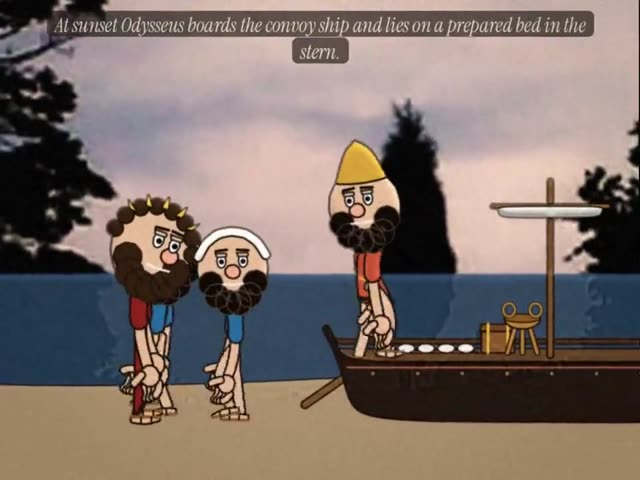
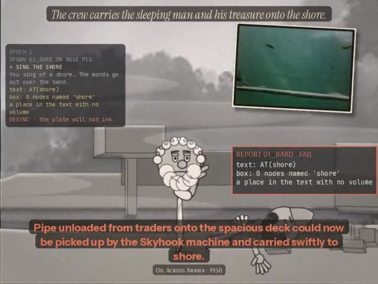
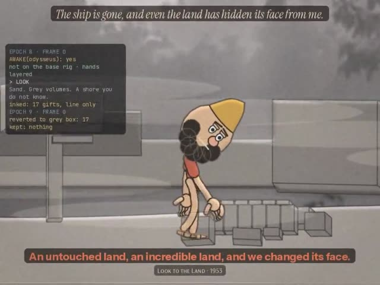
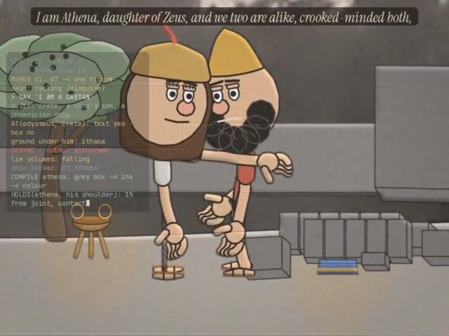
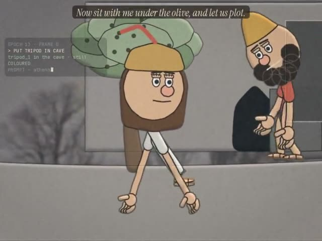
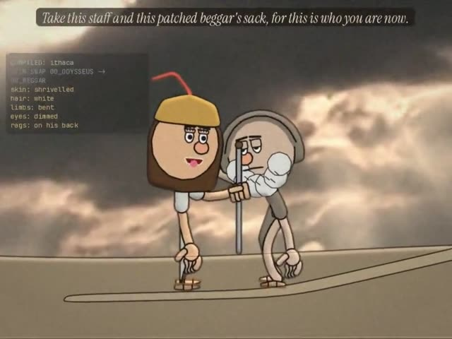

Home / The Found Odyssey / Episode 7 · THE LOOP
Test ODY-E7 The Found Odyssey
Episode 7 · THE LOOP
Book 13 as a loop: seven agents try to land the sleeping man on Ithaca and fail, until a grip holds, Athena compiles, and the old beggar is put together part by part.
- Part of
- The Found Odyssey: seven episodes · part 7 of 7, Episode 7 · Book 13
← before - Running time
- 6:47
- Made
- 2026-10-19
- Program
- The Found Odyssey
- Characters
- Odysseus, Athena, Odysseus, the old beggar
- File
- mp4, 960 wide, 39 MB
Production notes · THE FOUND ODYSSEY · Episode 7 · THE LOOP
Book 13 runs as one story, from the Phaeacian ship leaving Scheria to the old beggar walking up the high path on Ithaca. 6 min 48 s, -16.4 LUFS.
The experiment: pre-build bisimulation
Here it is in order. Click a frame and the film plays from there.
Episode 5 governed colour (blood against grey). Episode 6 governed the grip (palm, object, fingers, thumb). Episode 7 runs the build of the world inside the film.
Ithaca is two coupled states in every shot:
- A grey-box blockout. Every gift, the petrified ship, the olive, the cave and the rock wall are real 3D boxes in the same world coordinates as the rig, drawn through the plate's projection.
- An interactive-fiction log in a column at the side of the frame: commands, the parser's replies, the checks between text and boxes, and the result of each check.
When the text and the boxes disagree, the frame is desynchronised and the plate will not ink or colour.
The machinery is in ody/ep7/loop.py, and it follows your spec:
ArchiveNode: a 3D box, an IF predicate, and a state (GREYBOX, INKED, COLOURED, or STONE for the ship).HandRig.is_holding: the Episode 6 grip latch. A hand counts as holding a node only if its wrist is inside the node's box and it is drawn with the grip layering.step_bisimulation: grip first (the node goes to colour and is locked); otherwise a desynchronised node reverts to grey box at the reset.
Every number printed in the log comes from that code reading the rig's joints and the boxes. Examples are a wrist inside a box, a hand's distance to a shoulder, a count of tripods, and how far the stone moved. The scenes are evaluated once over all frames, so any frame renders the same on its own.

0:35 “At sunset Odysseus boards the convoy ship and lies on a prepared bed in the stern.” scene test The scene rendered on its own before the episode was assembled, to check staging, scale and the line.
scene test The scene rendered on its own before the episode was assembled, to check staging, scale and the line.- Part
- Cold open · the ship
- The line
- "At sunset Odysseus boards the convoy ship and lies on a prepared bed in the stern."
- What happens
- The last full colour before the loop. He lies down on the fleece and his hand opens and stays open. The empty ship then turns to stone far out, and the colour drains from the plate starting at the ship.

1:25 “The crew carries the sleeping man and his treasure onto the shore.” scene test The scene rendered on its own before the episode was assembled, to check staging, scale and the line.
scene test The scene rendered on its own before the episode was assembled, to check staging, scale and the line.- Part
- I · the loop
- Sign
- As 6, Any-space-whatever
- The line
- "The crew carries the sleeping man and his treasure onto the shore." (played seven times)
- What happens
- Seven agents (01_BARD, 02_BLOCKER, 03_GRIP, 04_BLEED, 05_PHYSICS, 06_DOUBT, 07_ATHENA) are seven instances of one base rig, each with its own skin. Each spawns as a bare wire rig, types its command, tries it and fails. For example, 03_GRIP's wrists are inside the tripod's box, but the base rig has no grip layers, so the hold is rejected. Each failure stamps a report, tears the frame and rewinds the plate to frame 0, and the line plays again. On the seventh pass, 07_ATHENA's hand stops short of the sleeping man's hand.

2:45 “Tripods, cauldrons, the woven robes, the gold.” scene test The scene rendered on its own before the episode was assembled, to check staging, scale and the line.
scene test The scene rendered on its own before the episode was assembled, to check staging, scale and the line.- Part
- II · the wake
- Sign
- (As 6)
- The line
- "Tripods, cauldrons, the woven robes, the gold."
- What happens
- He wakes and is drawn in colour; the beach is still grey box and still resets. His right hand closes on a tripod, then his left takes the robe, then his right takes a low olive branch. Each grip latches, survives every later reset, and bleeds colour into the plate around it.

3:49 “I am Athena, daughter of Zeus, and we two are alike, crooked-minded both,” scene test The scene rendered on its own before the episode was assembled, to check staging, scale and the line.
scene test The scene rendered on its own before the episode was assembled, to check staging, scale and the line.- Part
- III · Athena
- Sign
- Lo 36, Limpid and opaque
- The line
- "I am Athena, daughter of Zeus, and we two are alike, crooked-minded both,"
- What happens
- The seven agents walk in from all sides and become one figure whose skin cycles through all seven. His Cretan lie builds volumes (an island, a king's son, a Phoenician ship) that have no Ithaca ground under them, so the frame desynchronises and colour is withdrawn, from him too. Her rebuke knocks the lie volumes down. When she says her name she compiles from grey box to ink to colour, and her hand rests on his shoulder.

4:23 “Now sit with me under the olive, and let us plot.” scene test The scene rendered on its own before the episode was assembled, to check staging, scale and the line.
scene test The scene rendered on its own before the episode was assembled, to check staging, scale and the line.- Part
- IV · the cave
- Sign
- Sb 33, Symbol
- The line
- "Now sit with me under the olive, and let us plot."
- What happens
- He puts the tripod in the cave and drives the stone across the mouth. She sits under the olive with her open hand on the ground beside her until he sits there. Her lines work as an animation prompt: each Ithaca place she names compiles on a map on the rock wall at the moment she says it. Beside the map, Book 22 runs as three counterfactual grey-box simulations of the hall from a small agent model (
sim22.py). Open door with a sword fails; spears from the threshold fails; beggar, bow, doors barred and arms removed passes. The passing plan is locked in colour as his hand closes on the ground.

5:31 “Take this staff and this patched beggar's sack, for this is who you are now.” scene test The scene rendered on its own before the episode was assembled, to check staging, scale and the line.
scene test The scene rendered on its own before the episode was assembled, to check staging, scale and the line.- Part
- V · the beggar
- Sign
- Lo 36, Limpid and opaque
- The line
- "Take this staff and this patched beggar's sack, for this is who you are now."
- What happens
- Ithaca is compiled and the plate is in colour. As each part is named (skin, hair, limbs, eyes, rags) it is swapped on his rig, with a flash of the bare rig at each swap. The staff is the last grey box, in her hand. His hand closes over it, the grip latches, the staff goes to colour, and the skin locks as 08_BEGGAR.
- Part
- After the credits
- What happens
- The old man walks up the high path on his staff. The log has no reset left to run.
The previously segment uses Episode 6's own line, "Odysseus lashes keel and mast together."


Sound
This part is about the sound. Watch with it on.
- Each act has its own score from the series' lyre motif, quieter under the voices and silent before the line.
- The loop has its own sounds:
- a tick for every character typed into the log;
- a rewind sweep and a hard stop at each reset;
- a low bronze note when a grip latches;
- a falling tone when a simulation fails, and three notes when one locks.
- Room tone by place: shore, harbour and fog, the rock face.
Observed and generated
This part separates what came from the archive from what was made here.
- Every spoken line comes from the Found Odyssey CALL tracks for Book 13. The words and their order are unchanged; only the selection and the pauses were chosen (
ody/ep7/cut.py). - Several Book 13 call recordings are cut off (for example "No thief alive will shift that stone" lasts 0.3 s). Those lines were left out, so the treasure going into the cave plays without voice.
- The answers are The Found Odyssey's matches.
- The plates are from the cineosis-lab library:
- Lone Cedar (2007): Phaeacia at sunset;
- Morning Fog time-lapse (2007): the loop, the wake and Athena;
- Valley Fog (2006): the cave;
- Sunburst 1 (2007): the beggar;
- Vivid Sunrise 2 (2007): the closing shot.
- Generated: all drawing and animation, the grey boxes, the log, the agents and their tests, the hall simulations, the sound effects and the score.
- What the agents are: scripted procedures, each with a goal and a test against the geometry. They are not language-model agents.
Files
The code, if you want to open it.
- Loop machinery:
ody/ep7/loop.py. - Frame pipeline (grey layer, colour layer, bleed, log, stamps, reset):
ody/ep7/craft7.py. - Book 22 simulation:
ody/ep7/sim22.py. - Props:
ody/ep7/props7.py; old-man costumes added toody/toon.py. - Scenes:
ody/ep7/s_*.py; rig worlds:crash/m_e7*.js. - Title, cards, credits and assembly:
ody/ep7/furn7.py.
More from The Found Odyssey
 Episode 1 · NOBODYBook 9 in three minutes: a prompt box asks for the hero's name, the archive asks for "our young friend's", and Odysseus answers "Nobody."
Episode 1 · NOBODYBook 9 in three minutes: a prompt box asks for the hero's name, the archive asks for "our young friend's", and Odysseus answers "Nobody." Episode 2 · THE GUEST-GIFTThe Cyclops again, as a flashback at the Phaeacian feast, told by two tellers who remember it differently. The experiment: the recollection-image.
Episode 2 · THE GUEST-GIFTThe Cyclops again, as a flashback at the Phaeacian feast, told by two tellers who remember it differently. The experiment: the recollection-image. Episode 3 · THE RAFTBook 5 as one story, each act seen from the point of view of whoever is watching it: the gods on their television, Calypso, Poseidon, the sea.
Episode 3 · THE RAFTBook 5 as one story, each act seen from the point of view of whoever is watching it: the gods on their television, Calypso, Poseidon, the sea. Episode 4 · CIRCEBook 10 re-cut around one line per scene, the place where power shifts: the Laestrygonians, Circe, and the order to sail to the house of Death.
Episode 4 · CIRCEBook 10 re-cut around one line per scene, the place where power shifts: the Laestrygonians, Circe, and the order to sail to the house of Death.